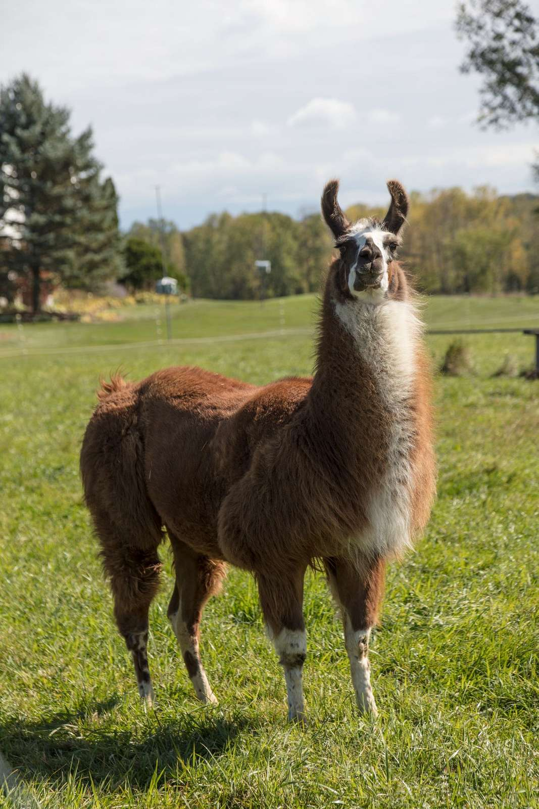

Llamas and alpacas have been used by humans for transportation and fleece production for a few thousand years. But as a result of their dispositions, they are typically used for different purposes today.
The llama continues to be a notorious pack animal, capable of carrying gear up to 20 miles per day, while the alpaca is renowned for its wool and fur.
Llamas are also utilized as guard animals for other herding animals in a farm setting.
Alpacas are less likely to be guard animals. This isn’t to say that alpacas can’t also protect other herding animals in this setting, but they are less protective compared to the average llama.

Guard llamas have an instinctive awareness of their surroundings, and even patrol their area for threats, including predators like foxes, coyotes and dogs. When a predator approaches, a guard llama will typically watch it intently, posture, make shrill noises to try and scare it off, and even attempt to chase the animal away.